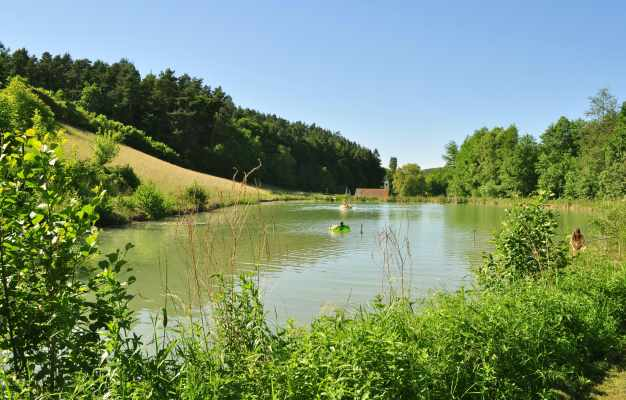
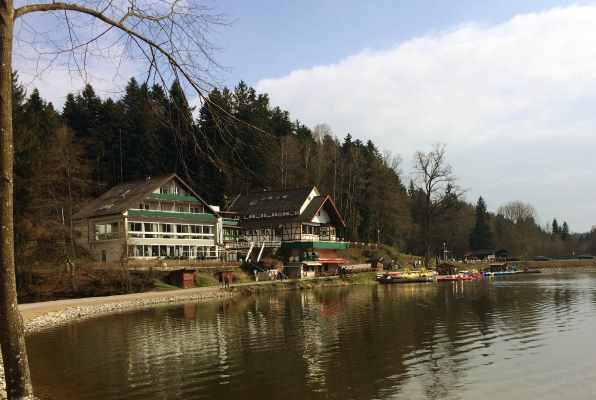

Ausflugsziel gesucht? Wir helfen dir, deinen idealen See zu finden.
Bei uns findet ihr die schönsten Seen - ob im Landkreis Heilbronn, Hohenlohekreis, im Schwäbischen Wald oder Badestellen am Bodensee. Entdeckt hier gute Badeplätze in Baden-Württemberg. Und damit es noch mehr werden: Jeder kann uns seinen Lieblingssee schicken.
Freizeit für Familien
Manchmal lebt man seit Jahren in einer Stadt und plötzlich entdeckt man einen phantastischen kleinen See, der nur wenige Kilometer von der eigenen Haustür entfernt ist. Kann passieren. Probier doch mal, ob du bei uns fündig wirst. Wir würden uns freuen.
